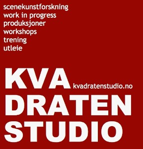

Morgentrening med Kvadraten Studio høst 2015 - man-tors morgen hver uke!
- Kategori:
- Tverrfaglige kurs
Tverrfaglige kurs
Åpent for profesjonelle skuespillere og andre profesjonelle deltakere med spesifisert bakgrunn og erfaring. Se søknadsteksten for spesifikasjoner. Legg ved CV. - Dato:
- 31.08.2015 til 27.11.2015
- Start kl :
- 09:00
- Slutt kl :
- 10:00
- Pris:
- 750,-
- Adresse:
- Norsk Skuespillersenter, Welhavens gate 1, Oslo
Norsk Skuespillersenter samarbeider med KVADRATEN STUDIO (tidl. Studio 18) om å tilby morgentrening for profesjonelle scenekunstnere. Skuespillerstudenter er også velkommen.
{kind=link}
Vi tilbyr trening, bøy og tøy, oppvarming og inspirasjon. Morgentreningen ledes av profesjonelle pedagoger og scenekunstnere med bred erfaring innenfor områder som STEMME og KROPP, LECOQ, PILATES, VIEWPOINTS, CHEKHOV, ENSEMBLE, FELDENKRAIS OG YOGA.
Meld deg på via vår påmeldingsside. Velkommen!
Høstens metoder og pedagoger (med forbehold om endringer): Metoder og pedagoger høst 2015
Høsten program (med forbehold om endringer):

For hvem?
KVADRATEN STUDIO retter seg i hovedsak inn mot det profesjonelle scenekunstmiljøet (skuespillere, dansere, regissører, koreografer, musikere, pedagoger, performere), med 3-årig utdannelse på høyskolenivå eller flerårig profesjonell arbeidserfaring, og noen av disse gruppene kan få Skuespillersenterets subsidierte priser (se tabellen nedenfor). Studenter er også velkommen. Skuespiller- og danseralliansen er blant de som benytter seg av tilbudet.
Norsk Skuespillerforbund støtter tilbudet med lokaler, og til gjengjeld får medlemmer ekstra rabatt.
Prisliste høst 2015:

Sesongkortet og klippekortet varer ut høstsesongen. Fra og med 1. oktober kan man kun kjøpe klippekort eller drop-in.
KVADRATEN STUDIO (tidligere Studio 18) ble startet av Henriette Blakstad, Alicja Ziolko og Thomas Hildebrand med det formål å kunne tilby scenekunstnere og andre kunstgrupper jevnlig daglig trening i teknikker rettet inn mot teaterfeltet. Norsk Skuespillersenter har inngått et samarbeid om morgentrening med KVADRATEN STUDIO som fører til gunstige priser for brukere av senteret, NSFs medlemmer samt ansatte i Skuespiller- og danseralliansen. På nåværende tidspunkt drives det hovedsaklig av Alicja Ziolko.
Kontakt KVADRATEN STUDIO
Har du spørsmål om morgentreningen? Skriv til info@alicjaziolko.com eller ring 90100777 (Alicja Ziolko).
Hvis spørsmålet gjelder rabatterte klippekort kan du kontakte Norsk Skuespillersenter.
KVADRATEN STUDIO er på Facebook.
{kind=link}